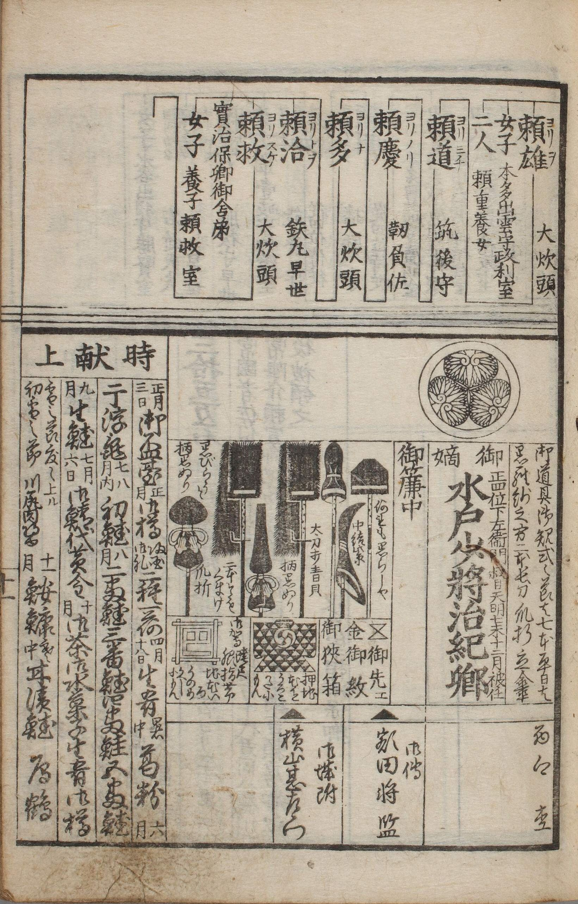
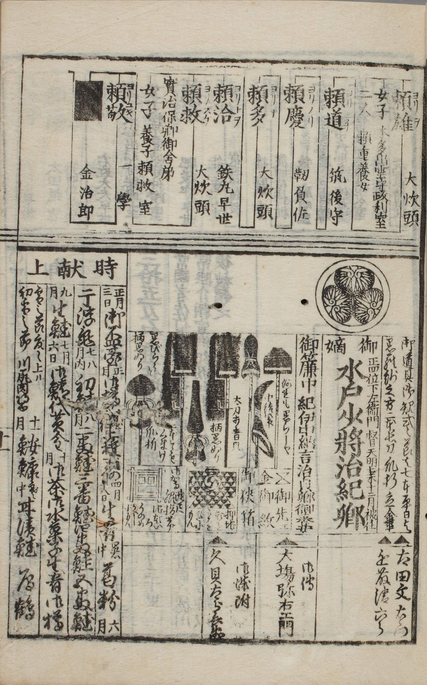
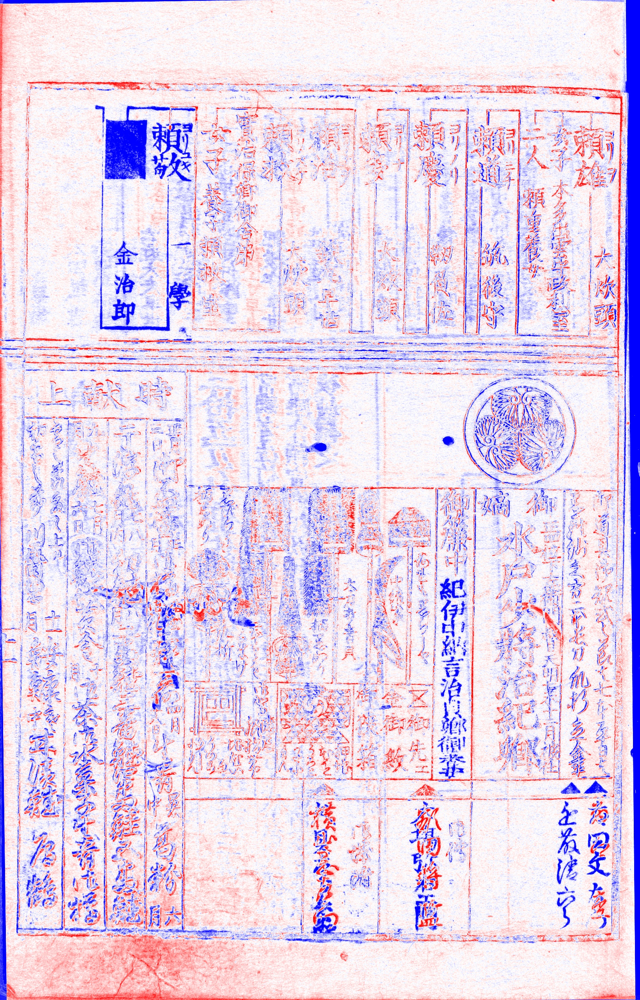
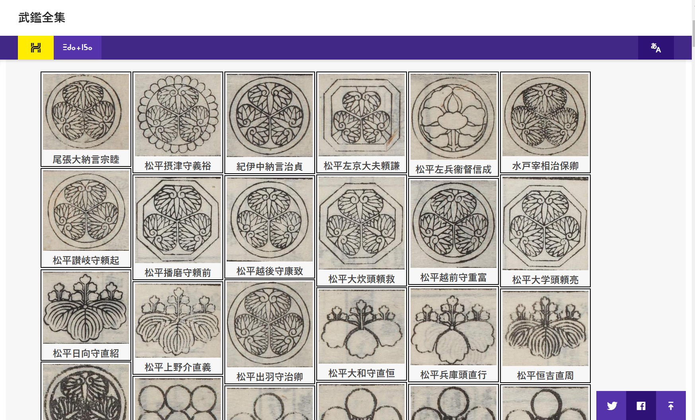
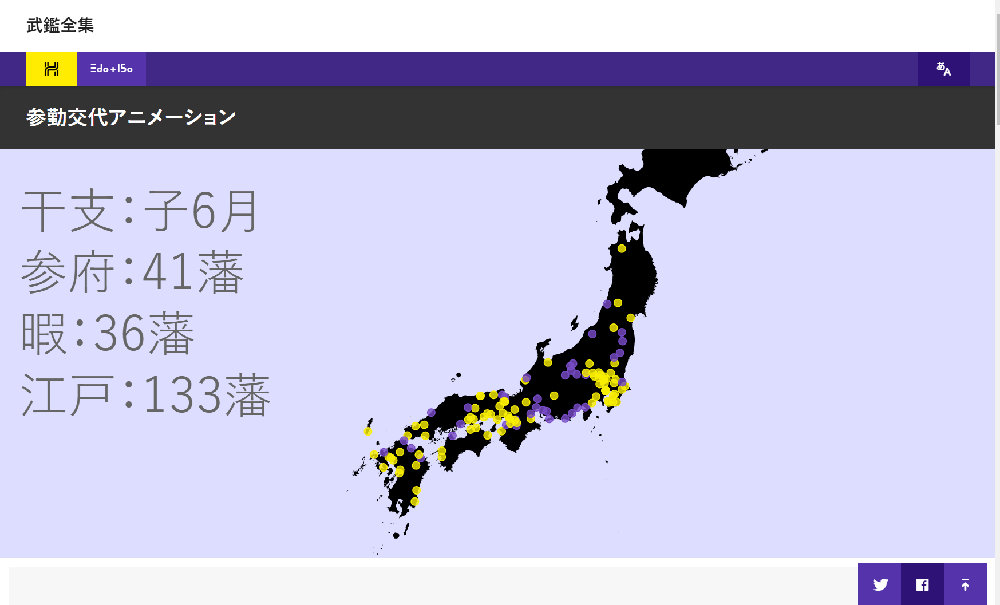

Japanese books in the Edo period (1603-1868) were mainly published by woodblock print. Their caligraphic writing style using differnt characters prevents native Japanese people to read and understand the content, and the knowledge of the past has been buried in libraries. To change this situation, NIJL-NW project started a ten-year mass digitization program to create the open dataset of 300,000 old Japanese books [7]. To take advantage of emerging big data of Japanese culture, we are working on the development of “deep access” technology to make the content of books accessible by structuring the content by either manually or automatically.
This paper focuses on a series of old Japanse books called “Bukan” [6]. Bukan offers the directory of families of the state king (Daimyo) and bureaucrats of the central government (Bakufu) in the Edo period. Bukan has a unique history. It had been a best seller book for as long as 100 to 200 years, had been updated and published frequently with a peak frequency of a few times in a month, and had been the battle field of two commercial publishers competing each other to improve the quality of their own Bukan editions. Because of good coverage and quality of Bukan, the comprehensive analysis of Bukan is expected to improve our understanding on the political, administrative, and cultural structure in the Edo period.
Comprehensive analysis cannot be achieved, however, without a solution to the problem of multiple versions. Bukan had been published for a long period with high frequency, and it is not known how many versions had been published, or how to decide the proper ordering of existing versions. Moreover, the complete transcription of Bukan is not realistic due to a large amount of text across multipe versions. In short, two major problems, management of versions and reduction of transcription, need to be solved for comprehensive analysis of Bukan
We first propose the concept of “differential reading,” which refers to the mode of reading books, such as close reading and distant reading. It is a reading focusing only on changes between different versions with support from digital tools. Algorithms to detect changes in different versions are two-fold; namely text-based and image-based approaches.
Text-based change detection is effective for manuscripts. Many tools, such as CollateX [2] and ViTA [9], have been developed for text comparison, or Versioning Machine [8], for structured text or TEI (Text Encoding Initiative). In the case of woodblock print, however, image-based change detection has a number of advantages. In the terminology of old Japanese bibliography, versions can be further classified into “publication” and “correction,” where the former refers to the complete re-creation of the woodblock, while the latter refers to the application of small patches to the woodblock. Change detection on publication is an easy problem for image processing, and change detection on correction is also feasible by image matching because only a small part is corrected and other parts remain the same. Other advantages of image-based change detection include transcription-less change detection and non-textual change detection.
By taking advantage of image-based change detection, we formulate differential reading as a two-step process; namely machines work first to detect changes, and humans work next to read changes.
|

|

|

|
Figure 1: Comparison of two different versions of Bukan. Left: Kansei Bukan (1789); middle: Kansei Bukan (1791); right; the result of change detection, where red color represents regions present only on the 1789 version, and blue, the 1791 version.
An image-based change detection algorithm was implemented on image processing library OpenCV 2.4 with a combination of algorithms such as FAST for feature detection, BRIEF for feature description, and Hamming distance for feature matching. In addition, RANSAC was used for estimating homography matrix for matching two images. Changes are then emphasized using a coloring scheme by assigning red and blue for large difference in pixel values and white for small difference in pixel values.
We compared two different versions of Bukan, Kansei Bukan (1789) [3] and Kansei Bukan (1791) [4] to check if the image-based change detection algorithm can identify changes between versions two years apart. Figure 1 shows the result of image-based change detection. It is clear that a part of the page, such as the genealogy of the family, has been changed from the 1789 version to the 1791 version. In the workflow of differential transcription, machine gernerated change infromation will be transferred to planned differential reading interface so that humans can focus only on a part of the image.
Differential transcription needs base transcription, on which transcription of subsequent versions depend. Initially the database of “Bukan Complete Collection” [1] uses Kansei Bukan (1789) as the base transcription. The database not only contains basic information about Daimyo, but also offers visualization about “Sankin Kotai,” which is a required travel for Daimyo between their states and Edo city to meet Shogun (the national leader) in every two years or more often. Animated visualization in Figure 2 shows spatio-temporal and seasonal patterns of their trips coordinated by Bakufu. The database also offers the graphic design collection of Daimyo, such as family emblem, costumes, and tools they used for official activities.
We found one important missing element in creating the database; namely the standard ID system agreed within the community. Bukan is a collection of entities, such as people and political organization that changes over time. To uniquely identify entities appearing in different sources and to create a time-series database of linked entities, we need the standard ID system in the Edo period through collaboration with historians. With a proper ID system, this system may evolve into the information infrastructure of people and political entities for the historical studies of the Edo period.
|

|

|
Figure 2: Bukan Complete Collection website. Left: the list of Daimyo family emblems; right: animated visualization of spatio-temporal patterns of Daimyo trips. Only Japanese website is available at this moment
The advantage of differential reading is two-fold. First, when reading two similar versions, differential reading has advantage over close reading by reducing the burden of human attention. A traditional approach of side-by-side comparison is error-prone, and machines can be optimized for pixel-level comparison without loss of attention by fatigue. For this type of task, human-machine collaboration should evolve into a combination that machines are in charge of low-level change detection while humans are in charge of high-level interpretation. Second, differential reading can be used as a component for differential transcription. The base transcription is required in any case, but the amount of transcription for subsequent versions is significantly reduced. A version management system may play an important role to optimize the transcription workflow, which is left for future work.
A proposed approach of differential transcription by human-machine collaboration is not only effective for Bukan, but also applicable to other woodblock print books with different versions. Our tools have been developed on IIIF (International Image Interoperability Framework), which allows us to apply our tools not only on NIJL-NW datasets but other datasets in the same manner. In the future, we plan to make a user interface on top of our IIIF Curation Viewer [5] and combine it with a workflow management tool to support efficient work of transcriptors.